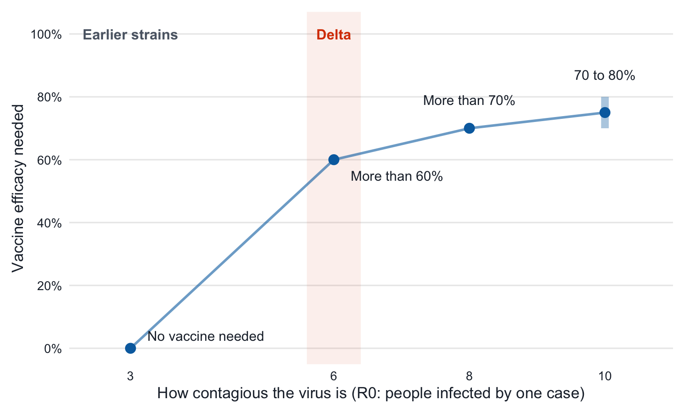

| Scenario | R0 | Vaccine efficacy (%) | Escape risk (× benchmark) | What it means |
|---|---|---|---|---|
| Earlier strains, no vaccine | 3 | 0 | 1 | The benchmark the program was designed for |
| Earlier strains, strong vaccine | 3 | 90 | 0.03 | Room for about 30 times more travellers at the same risk |
| Delta, no vaccine | 6 | 0 | 3 | Same rules, three times the risk |
| Delta, good vaccine | 6 | 60+ | 1 | Back to the benchmark |
| R0: average number of people one case infects when nobody is immune. 60+ means more than 60%. All values are approximate model estimates. |
A computer model of an Australian quarantine hotel suggests that, with the rules unchanged, the Delta variant made it about three times as likely that COVID-19 would escape into the community.
What this post shows
- Under Delta, the same quarantine rules carried about three times the risk of a virus escape (Table 1).
- Vaccinating everyone inside could close that gap, but only with a vaccine blocking more than 60% of infections (Figure 1).
- Good infection control inside the hotel mattered even more than the vaccine.
Quarantine was designed for a slower virus
From 2020, Australia let international travellers in only if they first spent 14 days in a quarantine hotel. Travellers were tested on day 3 and day 12, and anyone who tested positive was isolated along with their close contacts. The idea was simple: catch the virus at the border so the rest of the country could live relatively normally.
The system was never perfect. Now and then the virus escaped, usually by infecting a hotel worker or a traveller in a nearby room. Researchers call this a breach: an infected person leaving quarantine and mixing with the community. Each breach could start an outbreak, and several of Australia’s lockdowns began this way.
How often breaches happen depends heavily on how easily the virus spreads. Scientists measure this with the basic reproduction number, R0 (said “R-nought”). R0 is the average number of people one infected person would pass the virus on to if nobody were immune and nothing was done to stop it. Earlier strains of COVID-19 had an R0 of about 3. Delta was far more contagious, with an R0 closer to 6, so each case would infect about six people instead of three.
That raised two practical questions, which this post answers in turn:
- How much riskier did quarantine become once Delta arrived?
- Could vaccinating everyone inside quarantine make it as safe as it used to be?
The evidence comes from a computer model, not a head count
Because breaches are rare, there are not enough real ones to answer these questions directly. Instead, Zachreson et al. (2022) built a computer simulation of a typical quarantine hotel holding 100 travellers and 20 staff. The simulation followed each person day by day: who caught the virus, when they were tested, and who was isolated. It then estimated how often an infected person would leave the hotel. The researchers checked the model against real Australian breach records from March 2020 to May 2021 and found a reasonable match.
This matters for how we read the results. The numbers below are comparisons with a benchmark, the quarantine system as it ran before Delta, rather than forecasts of exactly how many people would get sick. Read how the model was built and checked at the end of this post.
Delta made the same rules about three times riskier
With that benchmark in mind, the first question has a clear answer. If nothing about quarantine changed except the virus, the risk of a breach rose to roughly three times the pre-Delta level (Table 1). The hotel, the tests and the 14 days were all identical; Delta was simply better at slipping through.
Table 1 also shows how much a good vaccine could help. Under pre-Delta conditions, a vaccine that blocked 90% of infections would have cut breach risk to about one-thirtieth of the benchmark. In principle, that would allow about 30 times as many travellers through the same hotels without raising the risk to the community.
Vaccines could restore safety, but only good ones
So vaccines help, but how good does a vaccine need to be to cancel out Delta? Here, vaccine efficacy means how much a vaccine lowers a person’s chance of catching the virus: a vaccine with 60% efficacy blocks 60 out of every 100 infections that would otherwise have happened.
The bar rises steeply as the virus becomes more contagious (Figure 1). For earlier strains, no vaccine was needed to meet the benchmark, because the existing rules already achieved it. For a Delta-like virus with an R0 of 6, every person in quarantine needed a vaccine with more than 60% efficacy to keep risk at the old level. At an R0 of 8 the requirement passed 70%, before levelling off at around 70–80% for the most contagious viruses tested.

These thresholds were demanding. Real vaccines were less effective at stopping Delta infections than at stopping earlier strains, so vaccination alone could not be relied on to make quarantine as safe as it had been.
Good habits inside the hotel mattered even more
If vaccines could not carry the load alone, what else mattered? The study’s answer was infection control inside the facility: ventilation, protective equipment, and keeping travellers and staff apart. When the researchers weakened these measures in the model, community risk rose by up to 100 times, and the damage was greatest when vaccines were weak. In other words, the everyday precautions inside a quarantine hotel were the safeguard that everything else depended on.
What the model cannot tell us
These results are useful, but they come with limits. The figures are relative risks from a simplified model of one generic hotel, not predictions for any real facility. The model also assumed, cautiously, that a vaccinated person who still caught the virus was just as infectious as an unvaccinated one. If vaccines also reduced onward spread, as later evidence suggested, the efficacy needed would be about 20 percentage points lower, around 40% at an R0 of 6 instead of 60%. The broad lesson holds either way, but the exact thresholds depend on this assumption.
So, was quarantine still safe enough under Delta?
Returning to the two questions we started with: first, quarantine rules that worked for earlier strains became roughly three times riskier under Delta, even though nothing about the hotels changed. Second, vaccinating everyone inside could restore the old level of safety, but only with a vaccine blocking more than 60% of infections, a high bar for Delta.
The broader point is that a quarantine system’s safety is not fixed by its rules alone. It depends on the virus going around and on how well vaccines work against it, and both can change quickly. When a more contagious variant appears, quarantine settings need to be reviewed rather than left as they were, and infection control inside the facility needs to stay strong. As Zachreson et al. (2022) argue, border quarantine is best seen as a way of buying time while community vaccination catches up, not a permanent substitute for it.
How the model was built and checked
NoteDetails for readers who want them (click to expand)
- What was simulated: one generic quarantine facility with 100 travellers and 20 workers. Travellers stayed 14 days and were tested on days 3 and 12; workers were tested on each day they worked. Anyone who tested positive was isolated, and their close contacts had their stay extended.
- Where the settings came from: values such as the incubation period, how test accuracy changes over an infection, and the share of people without symptoms were taken from earlier published studies.
- From breach to outbreak: the number of people escaping the facility while infectious was fed into a second model that estimated how likely each escape was to grow into a community outbreak.
- How it was checked: the model’s breach rate was compared with Australian quarantine breach records collected by state health departments and compiled by COVID LIVE (COVID LIVE 2021) between March 2020 and May 2021. It came within a factor of two of the reported figures, a reasonable match for such rare and unevenly reported events.
- Vaccination: every traveller and worker was assumed to be vaccinated, so “vaccine efficacy” here is the single number that summarises how much protection everyone had.
TipWant the technical detail?
This post is an adaptation of the peer-reviewed study by Zachreson et al. (2022), which includes the full model, its assumptions and extensive sensitivity tests.
References
COVID LIVE. 2021. COVID LIVE: Australian Quarantine Breaches. Https://covidlive.com.au.
Zachreson, Cameron, Freya M. Shearer, David J. Price, et al. 2022. “COVID-19 in Low-Tolerance Border Quarantine Systems: Impact of the Delta Variant of SARS-CoV-2.” Science Advances 8 (14): eabm3624. https://doi.org/10.1126/sciadv.abm3624.